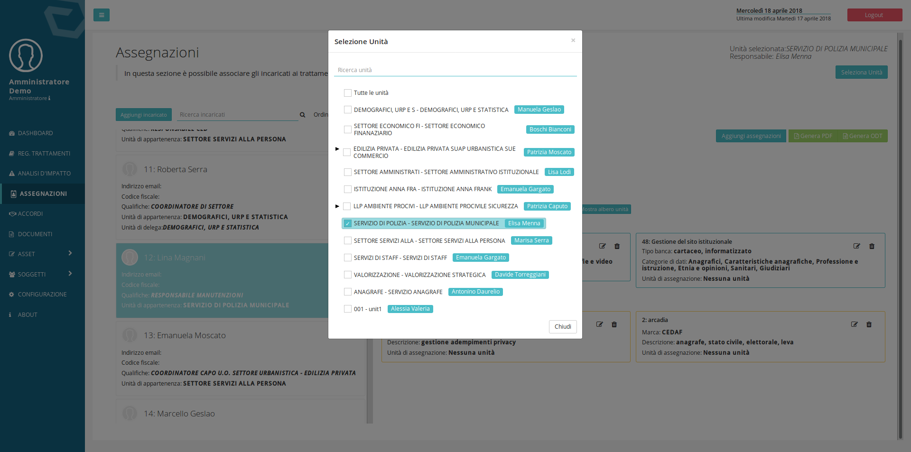

Distribuzione responsabilità interna¶
Nomina responsabili/referenti interni¶
In una organizzazione complessa può essere utile individuare delle figure di riferimento in materia di privacy all’interno delle unità organizzative. La loro individuazione permette di rafforzare la messa in atto di misure di sicurezza organizzative, quali procedure formali di rilascio delle credenziali applicative o agevolare il censimento delle attività di trattamento in modalità distribuita.
Un responsabile/referente privacy interno può essere individuato per ciascuna unità organizzativa e/o per ciascun trattamento.
- Per correlare Unità a responsabili/referenti fare riferrimento a quanto descritto nel capitolo Gestione delle unità organizzative e dei loro responsabili.
- Per correlare trattamenti a responsabili/referenti vedi Caratteristiche e elementi del registro dei trattamenti.
Per generare una lettera di incarico per il responsabile o referente privacy e opportuno:
- Selezionare la voce del menu Accordi
- Selezionare Responsabile Interno
- Selezionare il soggetto per il quale si desidera generare un accordo
- Selezionare Genera pdf oppure odt
{kind=link}
Interfaccia per nomina incaricati¶
La distribuzione della responsabilità passa necessariamente attraverso la correlazione di attività di trattamento a soggetti interni ed esterni all’ente.
Per correlare i soggetti esterni e quelli interni in posizione apicale (Responsabili esterni ed interni), è necessario utilizzare la scheda Soggetti presente al secondo passo del percorso guidato del registro dei trattamenti ‘Caratteristiche e elementi del registro dei trattamenti’_
Per gestire le assegnazioni di Trattamenti, Applicativi e Dispositivi personali è necessario utilizzare l’interfaccia Assegnazioni alla quale è possibile accedere utilizzando il menu posizionato sul lato sinistro dello schermo e facendo clic sulla voce Assegnazioni.

Tramite questa interfaccia è possibile visionare i Trattamenti gli Applicativi e i Dispositivi personali assegnati ad ogni soggetto censito in anagrafica (Soggetti→ Utenti), nel caso il soggetto che effettui l’accesso sia il Responsabile di unità organizzativa (Responsabile interno), questo avrà visibilità degli utenti facenti parte della sua unità.
Meccanismo di delega¶
Un responsabile di unità organizzativa può delegare un utente affinché questo possa assumere i privilegi definiti per i “delegati” (vedi capitolo 2.1), per delegare un utente il responsabile dovrà fare clic sul pulsante Mostra albero unita e selezionare le unità (apponendoci una spunta) per il quale lo intende delegare, fermo restando che un responsabile può delegare solo per le unità delle quali è responsabile.

Assegnazioni agli incaricati¶
Tramite DPM è possibile tracciare i Trattamenti, gli Applicativi e i Dispositivi a cui sono abilitati i soggetti incaricati del trattamento, o come definiti dal regolamenti le persone autorizzate al trattamento dei dati. Per questo si utilizza l’interfaccia delle assegnazioni, a cui si accede tramite un clic sulla voce di menu Assegnazioni.
Una volta effettuato l’accesso si ha visibilità delle persone fisiche appartenenti all’unità di cui si è responsabili o delegati.
Facendo clic nella colonna sulla sinistra dell’interfaccia, sulla scheda che rappresenta un incaricato si visualizzano gli oggetti correlati con il soggetto e le lettere di nomina generate fino a quel momento.
Per correlare un Trattamento, Applicativo o Dispositivo personale (Asset) ad un soggetto:
- fare clic sulla scheda che rappresenta la persona a cui si vogliono assegnare gli Asset
- scegliere il tipo di Asset
- fare clic sugli elementi da assegnare
- scorrere fino in fondo all’elenco e fare clic sul pulsante Assegna

Assegnazioni agli incaricati con utenteze di Amministrative¶
Le assegnazioni di trattamenti e applicativi devono sempre correlate ad una unità organizzativa. Se le assegnazioni vengono fatte con un’utenza che non appartiene ad una unità queste saranno per impostazione predefinita non correlate con delle unità, e quindi non compariranno nelle lettere d’incarico generate.
{kind=link}
La modifica della correlazione con l’unità puo essere fatta prima della nomina anche quando si opera con utenze amministrative. Per fare ciò è opportuno simulare l’appartenenza ad una o più unità organizzative:
- fare clic sul pulsante seleziona unità in sullo schermo in alto a destra [1]
- mettere una spunta sull’unità per la quale si intende operare
Per la modifica della correlazione con l’unità puo essere fatta anche successivamente alla assegnazione. Per fare ciò è opportuno fare clic pulsante modifica [2] di ogni trattamento o applicativo e mettere la spunta sulle unità per le quali si intende assegnare l’oggetto.
{kind=link}
{kind=link}